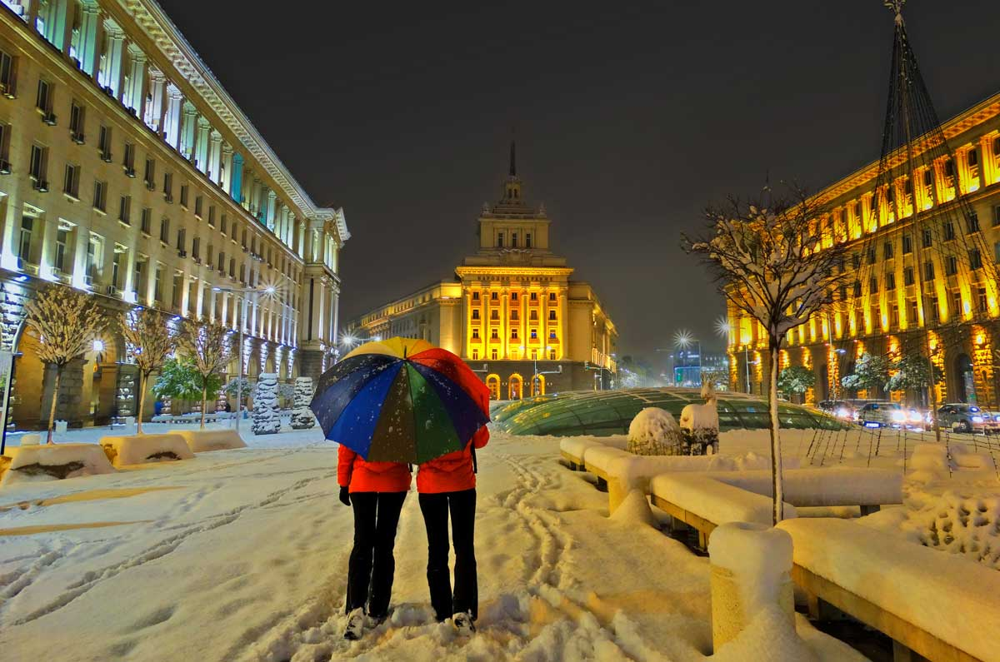
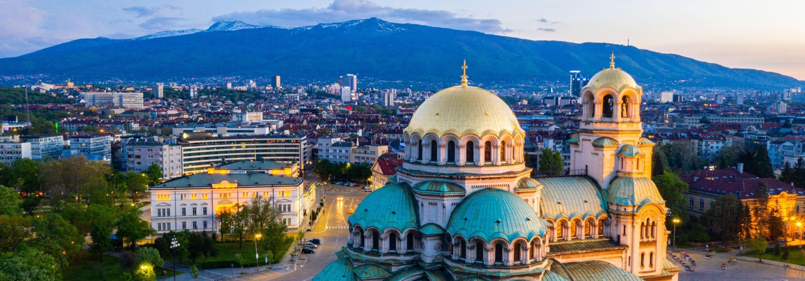
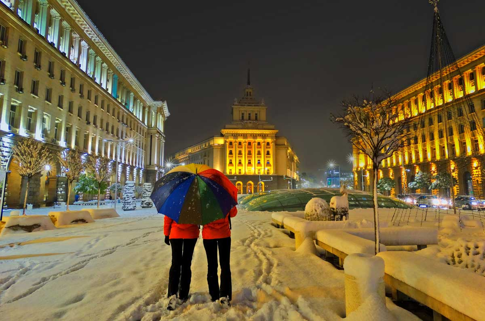
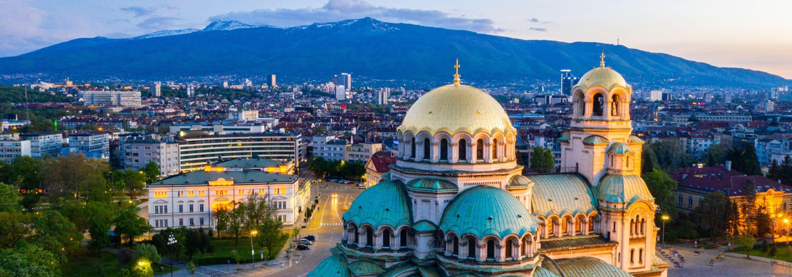

Tucked away in the heart of the Balkans, Sofia, the capital of Bulgaria, beckons travelers with its rich tapestry of history, vibrant culture, and warm hospitality. As one of Europe’s oldest cities, Sofia is a living testament to the countless civilizations that have left their mark on its streets, from the ancient Thracians to the mighty Roman Empire and the glorious Byzantine era. Wander through the city’s historic center, where ornate Orthodox churches stand alongside elegant neoclassical buildings, creating a captivating blend of architectural styles that spans centuries. Immerse yourself in Sofia’s cultural treasures as you explore its world-class museums, theaters, and galleries. Marvel at the stunning frescoes of the Boyana Church, a UNESCO World Heritage Site that showcases some of the finest examples of medieval Bulgarian art.
Delve into the city’s tumultuous past at the National History Museum, where artifacts dating back thousands of years tell the story of Bulgaria’s rich heritage. And don’t miss the chance to experience Sofia’s vibrant arts scene, where traditional folk music and dance blend seamlessly with contemporary theater and avant-garde exhibitions, creating a dynamic cultural landscape that reflects the city’s diverse influences and creative spirit. In Sofia, every corner reveals a new layer of history and culture, inviting you to embark on a journey of discovery through this enchanting capital city.As the sun sets over Sofia, the city comes alive with a vibrant energy that beckons visitors to explore its bustling streets and lively neighborhoods. Head to Vitosha Boulevard, the city’s main thoroughfare, where fashionable boutiques, charming cafes, and trendy bars line the bustling pedestrian street. Join locals in savoring traditional Bulgarian cuisine at one of the city’s many taverns, where hearty dishes like banitsa (a flaky pastry filled with cheese) and kavarma (slow-cooked meat stew) are served with a generous helping of warmth and hospitality.